node | XML node that is to be converted to a document (IData object). This parameter supports the following types of input: | |
attrPrefix | String Optional. Prefix that is to be used to designate keys containing attribute values. The default is "@". For example, if you set attrPrefix to ATT_ and node contained the following element: <tx currency=dollars> <acct>cash</acct> <amt>120.00</amt> </tx> xmlNodeToDocument would convert the currency attribute as follows:  | |
arrays | String List Optional. Names of elements that are to be generated as arrays, regardless of whether they appear multiple times in node. For example, if arrays contained the following values for the XML document shown in the example in the description for this service: rep address xmlNodeToDocument would generate element rep as a String List and element address as a Document List. Important: If you include namespace prefixes in the element names that you specify in arrays, you must define the namespaces associated with those prefixes in nsDecls. | |
makeArrays | String Optional. Flag indicating whether you want xmlNodeToDocument to automatically create an array for every element that appears in node more than once. Set to: Important: You must set makeArrays to false when using documentTypeName to define the structure of an element. Otherwise, an exception will be thrown at run time. | |
collect | Document Optional. Elements that are to be placed into a new, named array (that is, a "collection"). Within collect, use key names to specify the names of the elements that are to be included in the collection. Then set the value of each key to specify the name of the collection in which you want that element placed. For example, if you wanted to place the <name> and <rep> elements in an array called originator, you would set collect as follows: | |
Key | Value | |
name | originator | |
rep | originator | |
If the set of elements in a collection are all simple elements, a String List is produced. However, if the set is made up of complex elements, or a combination of simple and complex elements, a Document List is produced. When this is the case, each member of the array will include a child element called *name that contains the name of the element from which that member was derived. You may optionally include namespace prefixes in the element names that you specify in collect; however, if you do, you must define the namespaces associated with those prefixes in nsDecls. Important: You cannot include an element in more than one collection. | ||
nsDecls | Document Optional. Namespace prefixes to use for the conversion. This parameter specifies the prefixes that will be used when namespace-qualified elements are converted to key names in the resulting IData object. For example, if you want elements belonging to a particular namespace to have the prefix GSX in the resulting IData (for example, GSX:acctNum), you would associate the prefix GSX with that namespace in nsDecls. (This is important because incoming XML documents can use any prefix for a given namespace, but the key names expected by a target service or MAP step on the Integration Server will have a fixed prefix.) Namespace prefixes in nsDecls also define the prefixes used by the arrays, documents, documentTypeName, and collect parameters. Each entry in nsDecls represents a namespace prefix/URI pair, where a key name represents a prefix and the value of the key specifies the namespace URI. For example, to define the URIs associated with two prefixes called GSX and TxMon, you would set nsDecls as follows:  | |
documents | String List Optional. Names of any simple elements that are to be generated as documents (IData objects) instead of Strings. The document produced for each element specified in documents will have the same name as the source element from which it is derived. It will contain a String element named *body that holds the element's value. For example, if documents contained the Strings name and rep and the source document contained the following: . . . <name>Midwest Extreme Sports</name> <rep>Laura M. Sanchez</rep> . . . xmlNodeToDocument would produce the following: 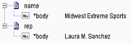 Note: If you include namespace prefixes in the element names that you specify, you must define the namespaces associated with those prefixes in nsDecls. | |
documentTypeName | String Optional. Fully qualified name of the document type that specifies the structure that is to be imposed on the resulting document. You can use this parameter to explicitly specify the order and dimensionality of elements. It is an alternative to using makeArrays and arrays to specify which elements are to be generated as arrays. For example, if you had the XML document shown in the example in this service's description, and you wanted the <name> and <rep> elements to be generated as String lists, you would define them as String Lists fields in a document type and then specify that document type in documentTypeName. Note: The document type specified in documentTypeName does not need to specify every element that will appear in the resulting document. It only needs to specify the elements whose structure you want to explicitly set. However, if you include namespace prefixes in the element names that you specify, you must define the namespaces associated with those prefixes in nsDecls. This service always converts XML nodes to String or Document object fields. It does not generate constrained objects (for example, Floats or Integers), even if the fields in the specified document are defined as constrained objects. If you are using derived type processing, you must provide this parameter. Important: When you use documentTypeName, set makeArrays to false and do not set arrays and documents. Otherwise, xmlNodeToDocument will throw an exception at run time. | |
mixedModel | String Optional. Flag specifying how mixed-content elements (elements containing both text values and child elements) are to be converted. The following is an example of a mixed-content element: <comment> This job is <status>pending</status>. Estimated completion date is <edc>Feb 14, 2000</edc>. </comment> Set to: 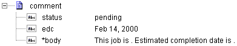 Important: When you set mixedModel to true, you must also use documentTypeName to specify a document type that describes the structure of the IData that you want xmlNodeToDocument to produce. Within the document type, mixed-content elements must be defined as documents that include a String field named *body. 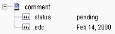 | |
preserveUndeclaredNS | String Optional. Flag indicating whether or not Integration Server keeps undeclared namespaces in the resulting document (IData). An undeclared namespace is one that is not specified as part of the nsDecls input parameter. Set to: | |
preserveNSPositions | String Optional. Flag indicating whether or not Integration Server maintains the position of namespaces declared in the nsDecls parameter in the resulting document. Set to: | |
useNamespacesOf DocumentType | String Optional. Flag indicating whether or not Integration Server uses the namespaces defined in the document type specified for the documentTypeName input parameter when creating a document from an XML string. Set to: | |
document | Document Document (IData object) representation of the nodes and attributes in node. |
XML Document | Output from xmlNodeToDocument |
<myDoc> <e1>e1Value</e1> </myDoc> | 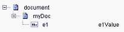 |
<?xml version="1.0" encoding="UTF-8" standalone="no"?> <myDoc> <e1>e1Value</e1> </myDoc> | 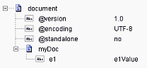 |
<?xml version="1.0" encoding="UTF-8" standalone="no"?> <myDoc> <e1 e1Attr="attrValue">e1Value</e1> </myDoc> | 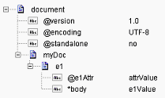 |
<?xml version="1.0" encoding="UTF-8" standalone="no"?> <myDoc> <e1>e1Value</e1> <e2>e2Value</e2> </myDoc> | 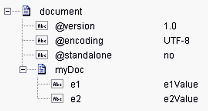 |
<?xml version="1.0" encoding="UTF-8" standalone="no"?> <myDoc> <e1>e1Value1</e1> <e2>e2Value</e2> <e1>e1Value2</e1> </myDoc> | 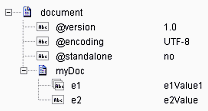 |
<?xml version="1.0" encoding="UTF-8"?> <myDoc> <e1 e1Attr="attrValue1">e1Value1</e1> <e2>e2Value</e2> <e1 e1Attr="attrValue2">e1Value2</e1> </myDoc> | 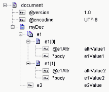 Note: This example assumes that makeArrays is set to true. Note that e1 was created as a document list, which holds both <e1> elements from the XML document. |
<?xml version="1.0" encoding="UTF-8"?> <myDoc> <e1 e1Attr="attrValue1">e1Value1</e1> <e2>e2Value</e2> <e1 e1Attr="attrValue2">e1Value2</e1> </myDoc> | 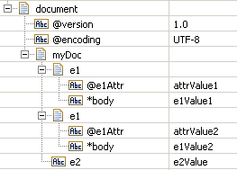 Note: This example assumes that makeArrays is set to false and that watt.server.xml.xmlNodeToDocument. keepDuplicates is set to true (the default). Note that both<e1> elements from the source XML are retained. |
<?xml version="1.0" encoding="UTF-8"?> <myDoc> <e1 e1Attr="attrValue1">e1Value1</e1> <e2>e2Value</e2> <e1 e1Attr="attrValue2">e1Value2</e1> </myDoc> | 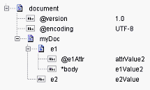 Note: This example assumes that makeArrays is set to false and that watt.server.xml.xmlNodeToDocument. keepDuplicates is set to false. Note that only the last <e1> element in the source XML was retained in the resulting document. |
<?xml version="1.0" encoding="UTF-8"?> <myDoc> <e1 e1Attr="attrValue1">e1Value1</e1> <e2> <e3>e3Value</e3> <e4 e4Attr="attrValue4" e4Attrb="attrValue4b">e4Value </e4> </e2> </myDoc> | 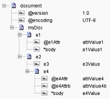 |
<?xml version="1.0" encoding="UTF-8" standalone="no"?> <tns:AcctInfo> xmlns:tns="http://localhost/Derived Address/schema.xsd" xmlns:xsi="http://www.w3.org/2001/ XMLSchema-instance" > <myDoc> <e1>e1Value</e1> </myDoc> <myDoc xsi:type="tns:DerivedDoc"> <e1>e1Value</e1> <e2>e1Value</e2> </myDoc> </tns:AcctInfo> | 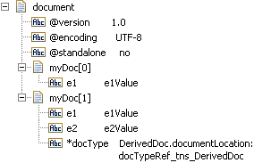 |